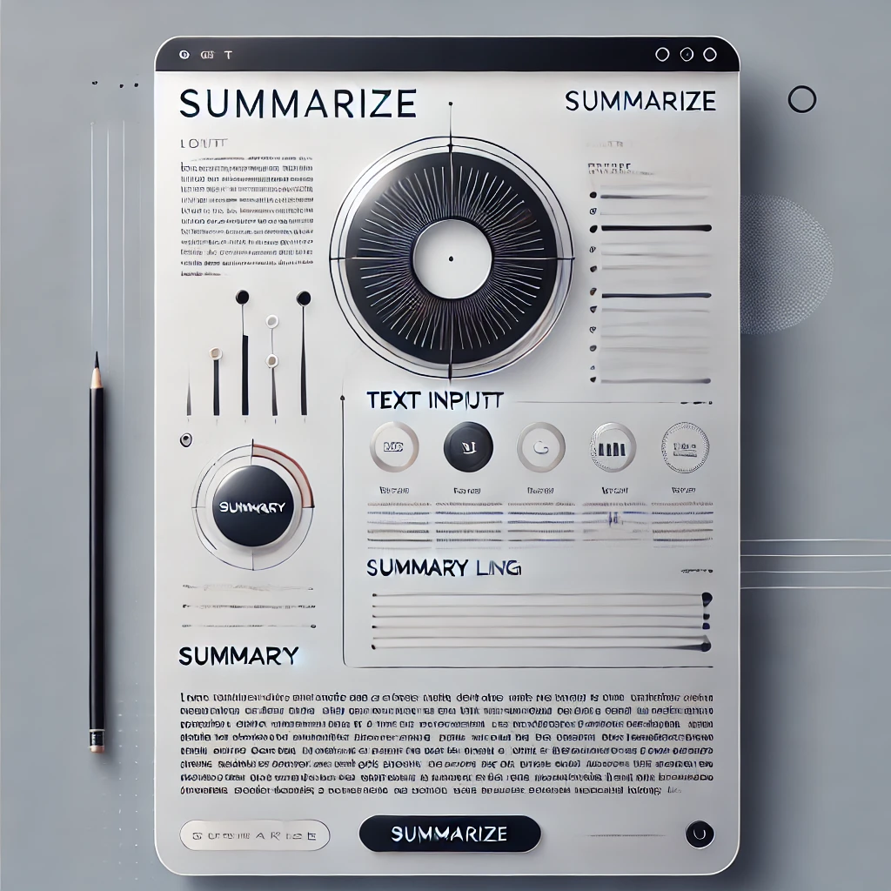
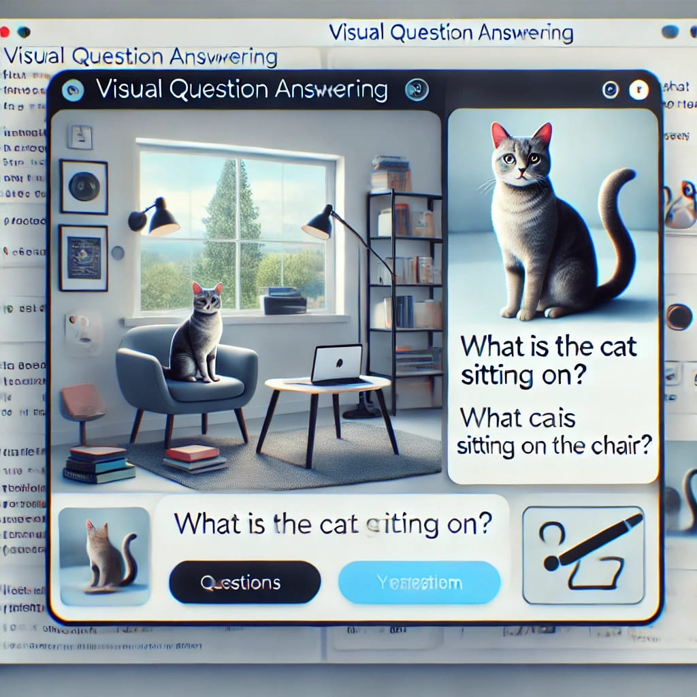
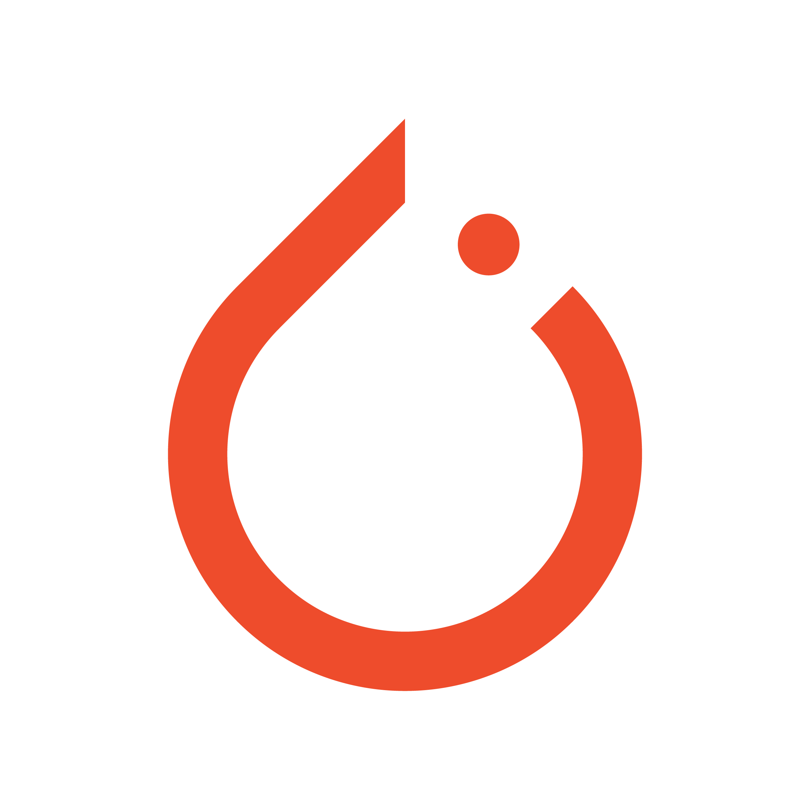
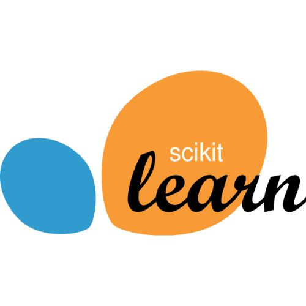
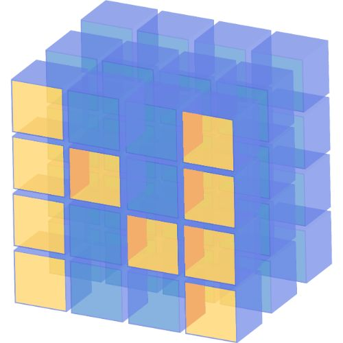
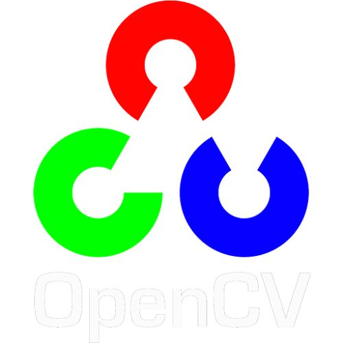
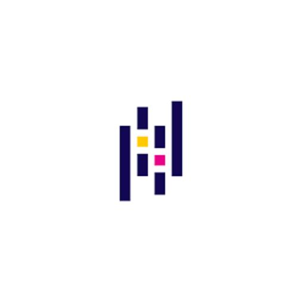
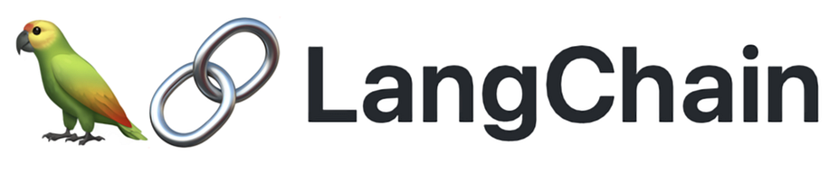
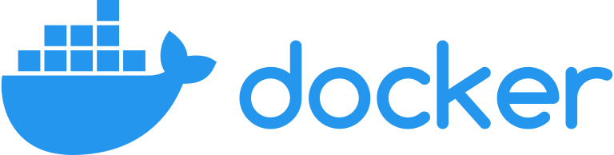

Hi, I'm Samarth Yadannavar.
A
AI Engineer with 2.5 years of building LLM and agentic systems that run in production, in quant trading and enterprise SaaS. I build the agents, the platform they run on, and the evals and guardrails that make them safe to ship.
Professional Experience
Building the agent platform that engineers and quant researchers use every day.
- Orchestration layer over Claude Code, Codex and OpenCode with request routing, session management, async queues and caching, handling ~10k requests/s
- MCP servers for 15+ internal platforms with permissioned tool access and guardrails
- Self-improving coding agents: they work in sandboxed Docker containers, pass tests and CI, raise merge requests and iterate on review-bot feedback, then engineers review, merge and deploy (100+ MRs merged)
- OpenTelemetry and Prometheus tracing of every agent run plus LLM-as-judge evals, cutting incident triage time by ~60%
- Long-running alpha research and backtesting agents on 2 years of data, cutting research cycles from weeks to hours
Worked directly with enterprise client stakeholders and took 3 agentic AI products through UAT into live customer workflows.
- Voice AI agents: extended LiveKit with Twilio telephony to run LangGraph agents on live customer calls with custom turn-taking, serving 50+ calls/hour
- Multi-agent orchestration: LangGraph StateGraph workflows with tool calling, structured outputs, task decomposition and fallback handling
- Graph-RAG: hybrid retrieval over embeddings and a knowledge graph with tool-augmented reasoning, lifting retrieval accuracy from ~60% to ~80%
- Personalization engine: knowledge-graph personalization from historical user interactions, improving response relevance by ~25%
- Agent Assist: real-time EQ and IQ recommendations for human agents across web chat and voice, reducing average handle time by ~20%
- Agentic project manager: a Teams bot that drives tasks through persistent JIRA follow-ups with sliding-window summarization, cutting overdue tickets by ~30%
- Fine-tuned LLMs on customer datasets and deployed small language models for quick decisions inside agent workflows
- Implemented Med-Agents, a chain-of-thought technique for medical reasoning on the NEET PG dataset, lifting GPT-4o zero-shot accuracy from 77% to 81.6%
- Modified the final decision step to resolve inconsistencies between the agents' answers, which added another 1.4%, for an overall accuracy of 83%
- Added a Direct Preference Optimization (DPO) task for the LLaVA-Med multimodal LLM so it can interpret unseen medical images
- Developed a Job Matching Agent using OpenAI API to match students’ resume content with job descriptions, streamlining the placement process for students from tier 2 and 3 colleges through automated assistance
- Implemented a RAG for enabling semantic search on MongoDB vector database, which calculates vector embeddings, and similarity scoring using cosine similarity function
- Utilized LangChain Framework for improving the speed and accuracy of matching student resumes with job opportunities, resulting in 200ms user-query response time
- Converted CCTV data of parking lots into tailored YOLOv8 dataset on Roboflow, ensuring accurate annotations
- Fine-tuned Ultralytics’ YOLOv8 model, maximizing the accuracy of detection of empty parking space
- Integrated real-time parking availability model with company’s website, enabling customers to find and book vacant spots before arriving
- Collected and curated a multimodal learner engagement dataset (943K+ frames at 60fps) for learning analysis.
- Developed and evaluated emotion recognition models using motion magnification techniques for microexpression analysis, achieving 84% classification accuracy.
- Performed statistical analysis to quantify relationships between affective states and learner engagement, identifying strong negative correlation trends.
- Published the findings at IEEE TALE 2024.
- Developed an AI assistant for Slack and Fogteams website using Rasa, automating note-taking and minutes summarization for enhancing efficiency of meetings
- Leveraged Rasa’s extractors, Spacy NLU to process employee data and Facebook’s Duckling extractor to extract date and time, enabling personalized communication and timely reminders
- Efficiently coordinated meetings through conversational interactions through Dialog Management by fine-tuning on over 1000+ examples, ensuring alignment of employee and client schedules
Research & Publications
- Samarth Yadannavar, Ashwin T.S., Manjunath, Ramkumar Rajendran, “Multimodal Analysis of Learning-Centered Emotions and Cognitive Processes in Open-Ended Learning Environments”, IEEE International Conference on Teaching, Assessment and Learning for Engineering (TALE), December 2024. doi:10.1109/TALE62452.2024.10834331
- Employed Vision Transformer & KimiaNet model for early cancer detection, training on WSI data from 4 organs
- Implemented domain generalization via transfer learning, achieving 0.7 AUC for cross-organ cancer classification
- Explored methods like synthetic data generation, Weighted Cross Entropy & Focal loss to handle class imbalance
- Improved accuracy of Liquid State Machine, a type of Spiking Neural Network on Neuromorphic-MNIST from 95% to 98%
- Extracted receptive field-based features using 18 Gabor Filters, inspired by hierarchical processing of visual cortex
- Enhanced performance by ensembling filters & CNN with LSM made of 3600 neurons without increasing model size
Projects
$ ls ~/projects/work
$ cat orchestrator.md
backends : claude-code | codex | opencode
layers : routing, sessions, async queues, cache
load : ~10k requests/sNK Securities One interface over Claude Code, Codex and OpenCode
- Built a high-throughput orchestration layer over Claude Code, Codex and OpenCode with request routing and session management.
- Async queues and caching sit in front of the agents, which cut both latency and cost.
- Handles around 10k requests per second and gives engineers and quant researchers a single way into coding agents.
$ mcp ls --servers
15+ internal platforms exposed as tools
access : permissioned per tool
guardrails : onNK Securities MCP servers for 15+ internal platforms
- Turned 15+ internal platforms into MCP servers so agents can use them as tools.
- Permissioned tool access, so an agent only reaches the tools it is allowed to use.
- Guardrails on tool calls across internal data, tooling and deployments.
$ agent run --sandbox docker
[ok] change made, tests pass
[ok] CI green, merge request opened
[..] review bot feedback, human mergeNK Securities Agents that raise their own merge requests
- Agents get sandboxed Docker access to the code, make a change and run the tests.
- Once tests and CI pass, the agent raises a merge request and iterates on feedback from an MR review bot.
- Engineers are then notified and they review, merge and deploy. A human makes the final call every time. 100+ MRs merged so far.
$ tail -f agent-traces
span agent.run otel ok
span llm.call otel ok
judge score 0.92 passNK Securities Tracing and LLM-as-judge evals on every agent run
- OpenTelemetry and Prometheus tracing of every agent run and LLM call.
- LLM-as-judge evals on agent outputs, rolled up into reliability reports.
- Cut incident triage time by about 60%.
$ research --data 2y --backtest
estimating alphas ...
backtesting ...
cycle time: weeks -> hoursNK Securities Long-running research and backtesting agents
- Long-running agents that estimate alphas and backtest them on 2 years of data.
- Cut research cycles from weeks to hours.
$ voice-agent start
transport : LiveKit + Twilio
brain : LangGraph
calls/hour: 50+Quant.ai LangGraph agents on live phone calls
- Extended LiveKit with Twilio telephony to run LangGraph agents on live customer calls.
- Custom turn-taking on top of LiveKit.
- Served 50+ calls an hour.
$ eval retrieval
vector only ~60%
hybrid graph ~80%
Quant.ai Embeddings plus a knowledge graph
- Hybrid retrieval that combines embedding search with a knowledge graph and tool-augmented reasoning.
- Lifted retrieval accuracy from about 60% to about 80%.
- Also built a knowledge-graph personalization engine on historical user interactions, improving response relevance by ~25%.
$ graph show
plan -> tools -> structured output
\-> fallback on failure
Quant.ai LangGraph StateGraph workflows for enterprise clients
- LangGraph StateGraph workflows with tool calling and structured outputs.
- Task decomposition and fallback handling built into the graph.
- Part of the 3 agentic products taken through UAT into live customer workflows.
$ eval neet-pg --model gpt-4o
zero-shot baseline 77.0%
med-agents 81.6%
modified decision 83.0%Fractal Med-Agents on GPT-4o and DPO for LLaVA-Med
- Implemented Med-Agents chain-of-thought reasoning on GPT-4o for the NEET PG benchmark.
- Reworked the final decision step and lifted zero-shot accuracy from 77% to 83%.
- Added a DPO post-training task for the LLaVA-Med multimodal LLM.
$ ls ~/projects/personal
$ omniclaw "send the file to my phone"
mac : accessibility tree -> click
peer : signed json-rpc -> android
Personal, in progress A voice assistant that drives my Mac and phone
- Lets an agent control native macOS apps through the Accessibility API (pyobjc), with a screenshot and vision-model fallback when an app exposes no UI tree.
- Websites go through a Playwright browser tool, and read-only lookups fall back to web fetch and search.
- Mac and Android agents talk peer to peer over HMAC-signed JSON-RPC, so a task heard on one device can run on the other. The Android side is still a work in progress.
An AI-powered agentic learning system with autonomous curriculum planning
- Developed an agentic learning system where autonomous AI agents (Planner, Teacher, Quiz, Progress) coordinate curriculum planning, instruction delivery, and comprehension assessment using LangGraph-based state graphs.
- Built a textbook-specific RAG pipeline with structured PDF extraction, LLM-driven table-of-contents inference, and chapter-scoped vector search using pgvector for context-aware teaching.
- Added durable workflows for long-running learning sessions, with inactivity detection, automated re-engagement and fault-tolerant agent coordination.
- Implemented freemium usage tracking with per-request token-level cost attribution across LLM and RAG operations, including BYOK support and real-time usage analytics.

Automated evaluation framework for LLM response quality assessment
- Designed an LLM-as-a-Judge framework to evaluate responses across relevance, correctness, and hallucination risk.
- Implemented rubric-based and pairwise comparison strategies to score and rank outputs across prompting and retrieval configurations.
- Leveraged judge feedback for iterative prompt optimization and lightweight fine-tuning to improve response quality.

Vision-Language-Action model for robotic manipulation in simulation
- Fine-tuning OpenVLA foundation model to enable Unitree H1 bipedal humanoid to perform dexterous manipulation through vision-language conditioned action prediction.
- Training in MuJoCo simulation using behavior cloning with PPO-based reinforcement learning for policy refinement.
- Implementing diffusion-based action decoder for smooth trajectory generation and real-world transfer.
$ openscad pendant.scad
board : XIAO ESP32-S3 Sense
parts : camera, mic, speaker, LiPo
fit : +0.5 mm clearancePersonal hardware, in progress Parametric CAD for an AI wearable
- Parametric OpenSCAD case for a pendant with a camera, always-on microphone, speaker and rechargeable battery.
- Every pocket is sized from manufacturer datasheets with 0.5 mm clearance so the parts drop in.
- Includes a full bill of materials with Indian sourcing.
A code generating agent built using CodeLlama
- Developed Code Generation Agent to provide hints & detect errors using Google’s MBPP dataset with 1K problems
- Utilized Mistral LLM from Ollama & CodeLlama for code generation, integrated with ReActAgent for tools integration
- Benchmarked performance on 200 Leetcode medium problems, achieving an 85% accuracy in real-time code generation
Skills
Languages and Databases
AI & ML Libraries

PyTorch Transformers
Transformers

Sklearn
NumPy
OpenCV
PandasGenerative AI & Agentic Systems

LangChainHugging Face
Infrastructure & Tools

Docker Git
Git
Education
Indian Institute of Technology, Bombay
Oct 2020 - May 2024 | Mumbai, India
Degree: B.Tech, Metallurgical Engineering and Materials Science
Minor: Data Science and Artificial Intelligence (CMINDS)
- Natural Language Processing
- Python for Data Science
- Machine Learning
- Computer Vision
Relevant Courseworks: